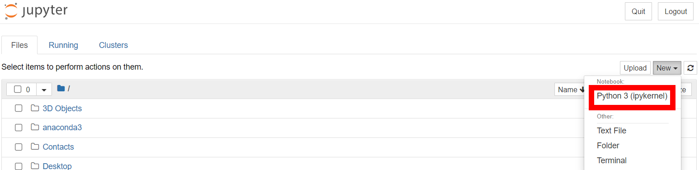
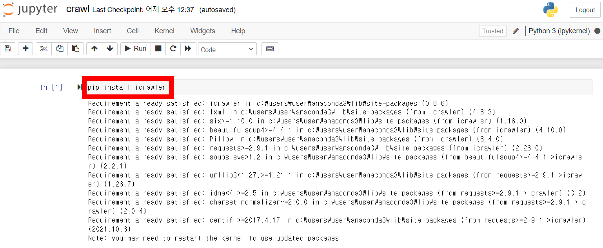
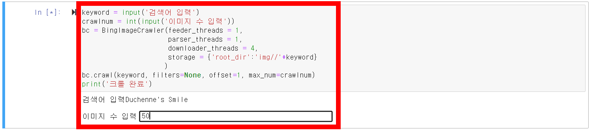
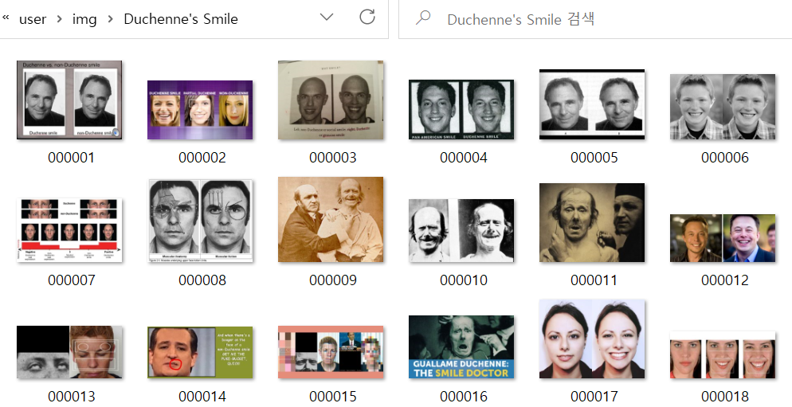

프로젝트 2-2
[심화] 이미지 크롤링
보다 정확한 결과를 도출해내기 위해서는 양질의 데이터가 필수적입니다.
데이터를 일일히 찾기 힘들 땐 이미지 크롤링 기능을 이용해 보아요.
코드 몇 줄로 수 백장의 이미지들을 가지고 올 수 있답니다!
실습을 위해 주피터노트북을 설치해 주세요.
1. 주피터 노트북 - New - Python3

2. pip install icrawler

3. from icrawler.builtin import BingImageCrawler
4.
keyword = input('검색어 입력')
crawlnum = int(input('이미지 수 입력'))
bc = BingImageCrawler(feeder_threads = 1,
parser_threads = 1,
downloader_threads = 4,
storage = {'root_dir':'img//'+keyword})
bc.crawl(keyword, filters=None, offset=1, max_num=crawlnum)
print('크롤 완료')

5. 크롤 결과 확인

와~ 정말 신기하죠? 이미지 크롤링까지 잘 따라온 여러분 정말 대단합니다!
이번 프로젝트를 통해 자신의 감정을 이해하고
자신이 행복함을 느끼는 순간이 언제인지 아는 기회가 되었길 바라요.
행복은 늘 우리 곁에 존재합니다!